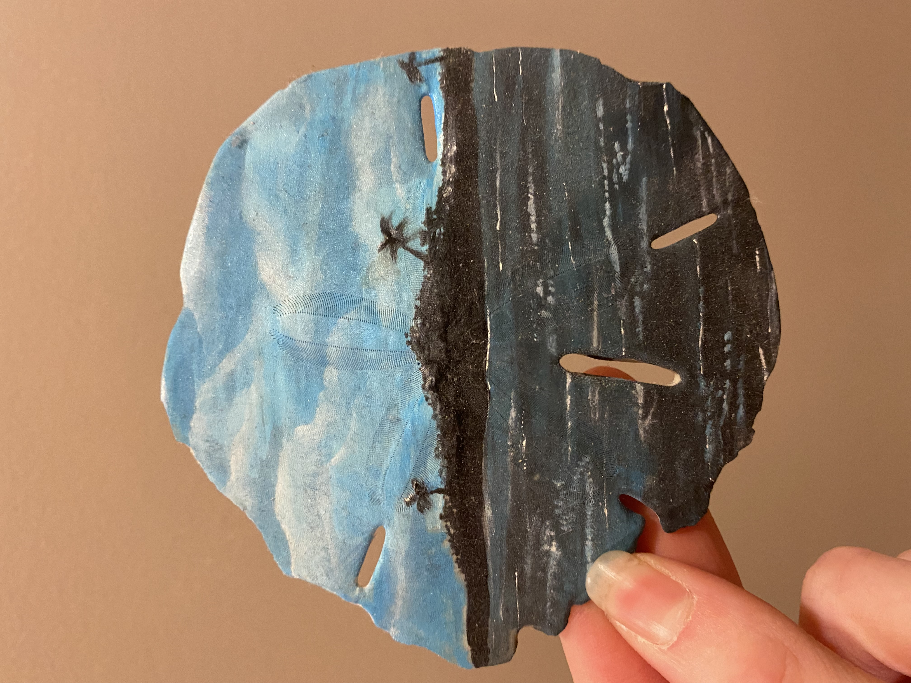

This was a painting I created for my mom.
It was painting based on a photo I took from Sanibel Island, FL.
It was our familys favorite trip.
This was a painting I created when I started
experimenting more with abstract art. I based it on the
emotions I had at the time. I felt as though my family was watching every move I made regarding my future closely, and it
caused a lot of anxiety. I just wanted to do what made me happiest. The painting can be seen
as either the colors being pulled from the hand into the darkness, or the colors
filling the hand as it touches them, for a more postive view.
This is a painting of my happy place. The Apostle Islands.
My best friend, brother and I went on a camping trip. The camping was a
complete disaster, but I took from it some of the funniest, happiest memories
Ive ever made. Everytime I look at the painting, I see us all on the beach,
no place to sleep, but laughing with our toes in the sand, just watching the sun
set together.
I Love to paint on unique objects, and try to give them
a story behind each one. This was a painting I did on a sanddollar that I
found walking along the beach.

Sanddollars are super fun to paint. My nana loved
the other one I did, and gifted me this sanddollar to paint as well.
She found it on the beach while on a trip with my papa. It brings her
happy memories.
This was the most recent sanddollar painting Ive added toe
the ever-growing collection.